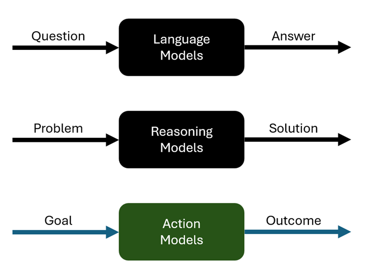

Action Models: Moving AI From Reasoning to Execution
By Vikas Goyal | Updated May 21, 2026
LLMs changed how teams create and understand information. Reasoning models improved the ability to work through harder tasks. Action models are the next practical step: systems that can use reasoning to execute work through tools, services, and business controls.
The distinction matters. Most enterprise AI work still stops at advice, draft output, or summarization. Useful, but incomplete. The real operational question is whether an AI system can take a goal, choose the right steps, call the right services, and stay inside policy while doing it.
What Is an Action Model?
An action model is an AI system designed to move from intent to controlled execution. It does not only produce text. It plans, selects tools, calls systems, checks results, and adjusts the next step.
In practical terms, an action model needs four capabilities:
- Understand the goal: Convert a user request into a scoped task with constraints, assumptions, and success criteria.
- Plan the work: Break the task into steps and identify which tools, APIs, data sources, or people are needed.
- Execute with controls: Take action through approved systems with authentication, policy checks, logging, and approval gates.
- Monitor the outcome: Check whether the action worked, handle errors, and escalate when confidence is low.
This is where action models differ from a chatbot. A chatbot can describe what to do. An action model can help do it, with the right boundaries.
Why This Matters Now
The market is moving from AI demos to production systems. That shift exposes a gap. Reasoning alone is not enough. Enterprise teams need execution patterns that are reliable, observable, and governed.
A model that can reason through a travel plan, procurement request, support case, or compliance workflow is useful. A model that can also call the booking service, check policy, update the system of record, and route exceptions is much more valuable.
That value does not come from autonomy by itself. It comes from autonomy plus controls.
Enterprise Example
Consider a customer support scenario. A user reports a product issue. A language model can summarize the issue and draft a reply. A reasoning model can compare symptoms, logs, and known incidents. An action model can go further.
It could:
- Classify the issue and check entitlement.
- Pull recent telemetry from approved systems.
- Search known incidents and internal runbooks.
- Create or update the support case.
- Recommend a fix with confidence level and evidence.
- Ask for approval before sending customer-facing communication or changing production configuration.
The important part is not that the model acts alone. The important part is that the workflow is explicit. The model has tools, permissions, logs, evaluation criteria, and escalation paths.
What Has to Be in Place
Action models need an architecture around them. Without that architecture, teams end up with brittle automation wrapped in natural language.
The minimum stack includes:
- Tool registry: A clear inventory of what the model can call, with descriptions, permissions, and expected inputs.
- Identity and access: The model should act through delegated permissions, not broad shared credentials.
- Policy layer: Rules for what can be done automatically, what needs approval, and what is blocked.
- Runtime governance: Logging, tracing, monitoring, and intervention points for live execution.
- Evaluation loop: Tests and evals for tool selection, plan quality, refusal behavior, and recovery from failure.
This is AI SDLC work. It belongs in design reviews, threat modeling, release gates, and operational dashboards. It should not be treated as a prompt engineering task.
Key Risks
The risks are not theoretical. The moment an AI system can act, small mistakes can become business events.
- Wrong action: The model chooses a valid tool but applies it to the wrong case, customer, or environment.
- Over-permissioning: The model gets more access than the workflow requires.
- Weak approval design: Human review becomes a rubber stamp because the system does not show evidence or alternatives.
- Poor recovery: The model fails midway and leaves the process in an unclear state.
- Missing audit trail: Teams cannot explain what happened, which tool was called, or why an action was taken.
These risks are manageable, but they need to be designed for early. Retrofitting governance after production use is expensive and usually incomplete.
Readiness Checklist
Before deploying action-oriented agents, teams should be able to answer these questions:
- What actions can the model take, and which actions are explicitly out of scope?
- Which systems of record can it read or update?
- What approval gates are required for customer, financial, security, or production-impacting actions?
- How are tool calls logged and reviewed?
- What evals prove that the model selects the right tool and refuses unsafe requests?
- What happens when the model is uncertain, blocked, or partially successful?
If these answers are not clear, the system is not ready for high-impact execution. It may still be ready for assistive workflows, draft generation, recommendations, or low-risk internal tasks.
The Road Ahead
Action models will become more important as enterprises move from AI copilots to AI-enabled operations. The winning pattern will not be maximum autonomy. It will be scoped autonomy with strong controls.
The near-term opportunity is practical:
- Start with narrow workflows where the business value is clear.
- Use approved APIs and tools instead of screen scraping or hidden automation.
- Keep humans in the loop for high-impact decisions.
- Measure task completion, error recovery, escalation quality, and policy compliance.
- Treat runtime governance as part of the product, not as an afterthought.
Conclusion

Action models are not just a new model category. They are a shift in how AI systems are designed, tested, and operated. The core question is no longer whether a model can generate a useful answer. The question is whether it can help complete useful work inside the right controls.
That is where enterprise AI will be judged: not by how fluent the system sounds, but by whether it can execute safely, recover from issues, and leave a clear audit trail.